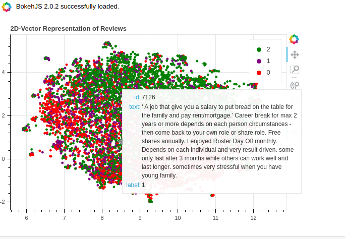
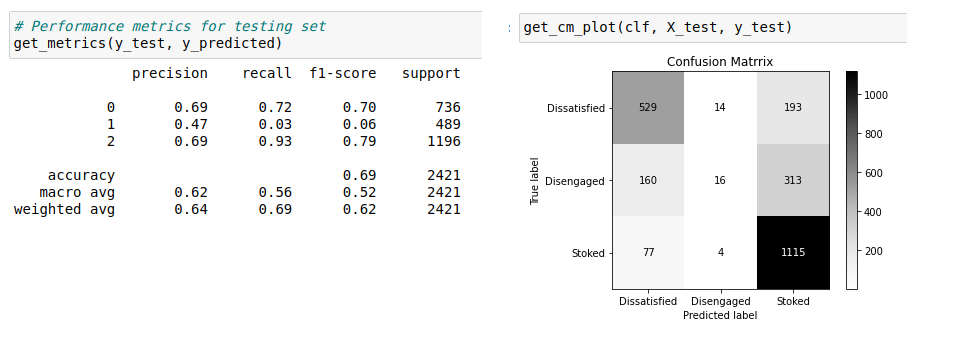
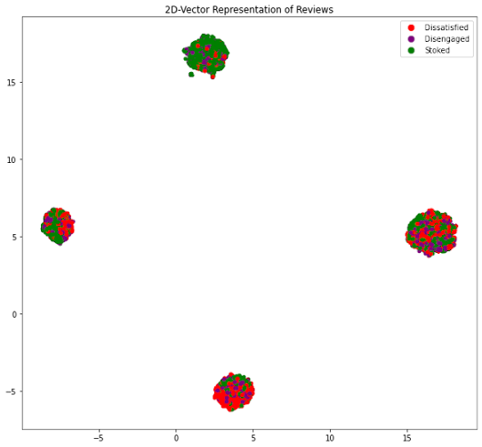
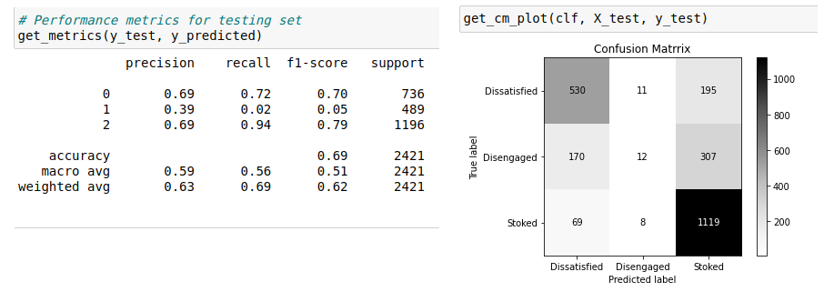
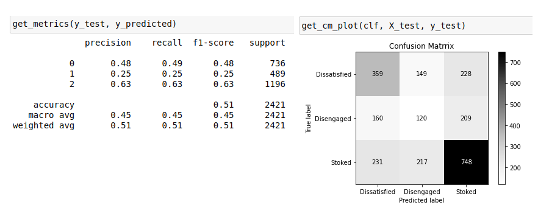
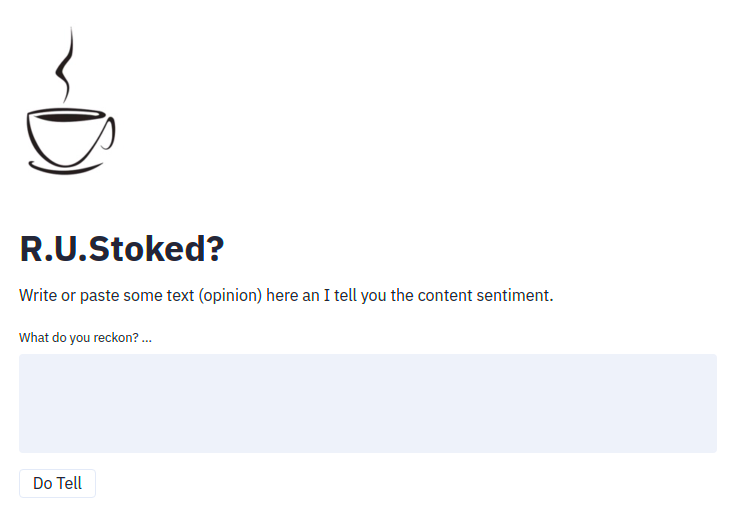
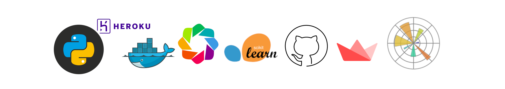

R.U.Stoked
What about is this project?
R.U.Stoked is a Natural Language Processing (Sentiment Analysis type), not a binary one though. Here I focused on detecting a third group of sentiment which I call here after “Disengaged”. A range of opinions which are neither “Stoked” nor “Dissatisfied”. I think detecting this group of so to speak “users/customers” can create business values in problem cases such as Churn or targeting prospect customers. Actually this idea is also kind of supported by the data. Almost exactly half of reviews rated 3 out of 5 recommended their experience to others and the other half suggested not to.
View the project here on Github.
Where does data come from?
The data has been collected (/scraped) from SEEK website. It comprises almost 13k rows of data by which employees have expressed their feelings and opinions about their employers. I have just collected the data for a dozen of companies which have relatively had higher number of reviews. And They mostly belong to two fields of FMCG retailers and Finance/Technology industries.
What are challenges?
- Detecting a neutral class of sentiment in between
positiveandnegativeones has been a bit of challenge because exploring those reviews shows that the choice of words tends to be almost similar to either positive or negative reviews. - Many of the reviews are written by not-native English speakers as they vary a lot in terms of word choices, sentence structures, comprehension, etc.
- The SEEK template for registering reviews is asking for
prosandcons. So, it has resulted in more of a list-like outcome rather than comprehensive opinions. For example in response to cons many may say “management” which clearly lacks the sentiment compared to something like “bad or poor management”. - Another feature of SEEK’s reviews is that the overall rating is not calculated as average of employees’ ratings on some other subjects but it is acquired independently. This raised a bit of inconsistency between users’ overall opinion of their client compared to their opinion on different aspects of their work paces.
First try and failure
There is a folder named “withdrawn” in the repository which contains a few notebooks as my first approach to this project which I consider as a failure not particularly for the outcomes but more because of my strategy. I was sort of rushing to wrap it up which was not really working out and this is why: * I did not collect enough data in terms of both the amount of data and the meta-data which help to explore and explain data beter. * I did not tackle the problem according to the best practices. I created a pipeline of different models with various features and used the grid search technique to see which one results in the best accuracy score. I did not put much time into data exploration and feature engineering. As a result, It was more of a black box with no insight of what is going on under the hood of model performance.
* I was not writing good codes. It was all in the notebooks (not reusable and well structured)
However, I came across this excellent book “Building Machine Learning Powered Applications“ written by Emmanuel Ameisen. Reading this book is actually the reason to reconsider my approach and start this project over.
Toolings and Technologies
pandasto manipulate and explore the data
matplotlibandbokehto visualise and explore the data

TfifVectorizerand in some casesSpacyto get the word vectors.
- Scikit-Learn
RandomForestClassifierandNaive Bayesas model/algorithm streamlitto build the applicationDockerandGithub Actionsfor CI/CDHerokuandAWSto deploy on
How did it go?
First model trained on just the text data has performed pretty well on predicting positive and negative classes but poorly on the “Disengaged” labels.

To tweak the model performance, I extracted some features from the data and plugged them into the vectors. Those features were selected to help the model detecting the sentiment better and distinguishing different labels easier such as:
- Words
greatandgoodappear frequently in positive opinions - Words
poor,bad,not, etc. appear frequently in negative opinions - The count of above words appears to be an indication of sentiment in each piece of review.
- The word
butseems to have a higher frequency of occurring within “Disengaged” labels as it serves for changing the language tone from positive to negative or vice versa.
Plugging above candidate features in the word vectors and visualization shows some improvement in separating data clusters each containing the majority of one of the labels but for the “Disengaged” label it still does not show much improvement:

And the outcome scores agree as well:

Well, I would say if features are too obvious, probably the model has already picked them. Using Naive Bayes algorithm as recommended by Scikit-Learn (Choosing the right estimator) did not make a noticeable difference as expected (Normally a data problem results should not change considerably just by changing algorithm, if so, probably something is done wrong).
However, using just features without the word vectors shows some improvement albeit at cost of model performance decrease on two other labels.

Working more on generating and extracting features seems like a promising approach to take here.
The Application
I have recently been hearing a lot about Streamlit and I wanted to try something new. Although it may not be as sophisticated as some backend frameworks such as Flask and Django, I should say that for prototyping and a simple single-page webapp, Streamlit was super easy, extremely quick, and very cool.

Deployment
I went with a docker image as it is quite standard and straight forward. Deployment has been automated through GitHub Action to trigger some workflows on push and deploy to AWS ECS Instance and HEROKU, not at the same time though (Heroku server port is not to select and is generated as an environment variable which make some adjusments necessary to Dockerfile).
Obviously AWS required a lot more work around to get it orchestrating right and it is much stronger for providing this level of access to tweak the environment, however I love HEROKU for being simple and free :) as far as it is not consuming resources like a commercial webapp.
What’s next?
- Writing some unit tests and getting them to run through github actions.
- More on model development focusing on extracting and generating features
- Trying neural net for same problem
Thanks to open source and free world. 